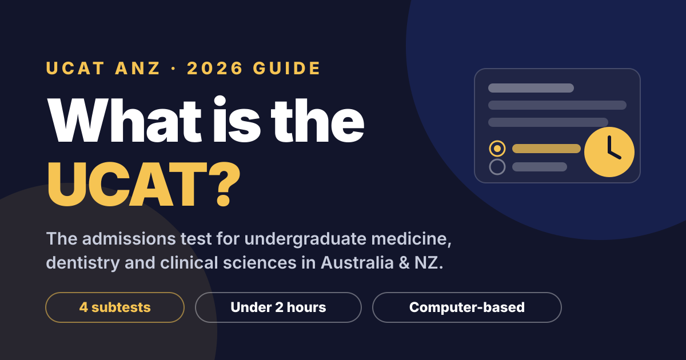
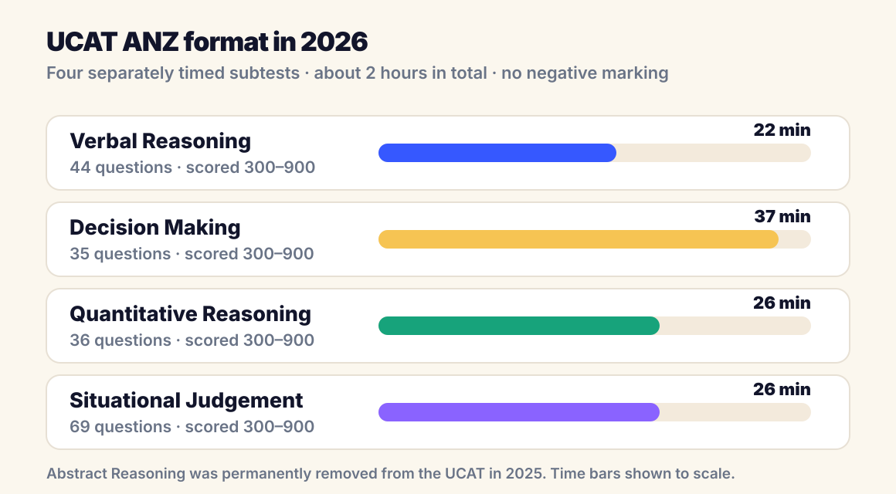
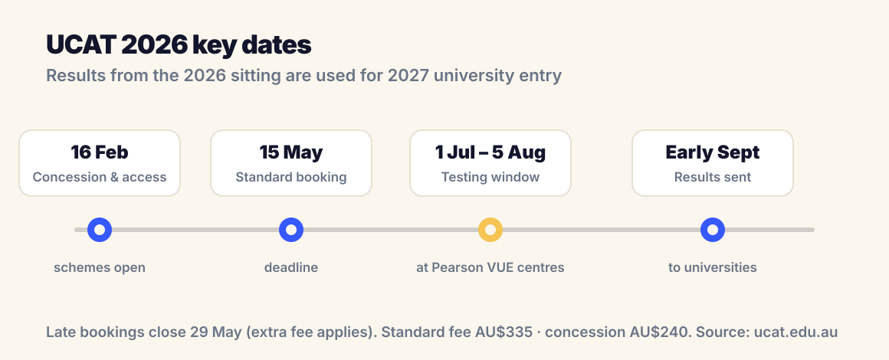

UCAT · Medicine & Dentistry Pathways
What is the UCAT? A plain-English guide for 2026

If your goal is to study medicine, dentistry or clinical sciences straight after school in Australia or New Zealand, there is one exam you will almost certainly meet on the way: the UCAT. Here is what it is, what it tests, how it is scored, and the dates that matter in 2026.
What does UCAT stand for?
UCAT stands for University Clinical Aptitude Test. The version sat in Australia and New Zealand is called the UCAT ANZ, and it is run by a consortium of universities together with the test provider Pearson VUE. It is a computer-based test taken at an official test centre, including centres in Adelaide, and it runs for just under 2 hours.
Unlike a school exam, the UCAT is not a knowledge test. There is no syllabus of facts to memorise. It is an aptitude test, designed to measure the thinking skills universities consider important for future doctors and dentists: reading quickly and accurately, making decisions with limited information, working confidently with numbers, and judging appropriate professional behaviour.
Who needs to sit the UCAT?
Most students sit the UCAT in Year 12, in the same year they apply for university. The score is then used for entry the following year. In South Australia, the UCAT ANZ is currently required for:
- Adelaide University: Medicine, Dental Surgery and Oral Health.
- Flinders University: Clinical Sciences / Medicine.
Most other undergraduate medical schools around Australia and New Zealand also require it. Universities combine your UCAT score with your ATAR and, in many cases, an interview, so the UCAT is one leg of a three-legged stool rather than the whole story. Always confirm the current entry requirements on the university's own website, because some pathways do not require the UCAT.
UCAT results are valid for one admissions cycle only. A 2026 UCAT score counts for courses starting in 2027, and cannot be reused later.
What is in the UCAT? The four subtests

1. Verbal Reasoning (44 questions, 22 minutes)
You read short passages and decide what logically follows. The challenge is speed: you have roughly 30 seconds per question, so skimming with purpose and resisting assumptions are the core skills.
2. Decision Making (35 questions, 37 minutes)
Logic puzzles, syllogisms, probability questions and evaluating arguments. This section rewards students who can work systematically instead of guessing by instinct.
3. Quantitative Reasoning (36 questions, 26 minutes)
Numerical problem solving: percentages, rates, ratios, and reading data from charts and tables. The maths itself sits around a strong Year 10 level. The difficulty comes from doing it quickly and accurately with an on-screen calculator.
4. Situational Judgement (69 questions, 26 minutes)
Short scenarios involving patients, colleagues and study situations, where you rate the appropriateness or importance of possible responses. It measures your understanding of ethics, integrity and teamwork rather than medical knowledge.
One important change to know about: Abstract Reasoning was permanently removed from the UCAT in 2025. If you find practice books or question banks that still include it, they are out of date.
How is the UCAT scored?
Each subtest is converted to a scaled score between 300 and 900. The three cognitive subtests (Verbal Reasoning, Decision Making and Quantitative Reasoning) are added together to give a total between 900 and 2700. Situational Judgement is reported separately, also on a 300 to 900 scale.
There is no negative marking, so you should never leave a question blank. Universities typically compare applicants using percentiles, and cut-offs shift from year to year depending on the applicant pool, so treat any specific number you read online as a rough guide rather than a promise.
UCAT 2026 key dates and fees

- 16 February 2026: concession scheme and access arrangements open.
- 15 May 2026: standard booking deadline (11:59pm AEST). Late bookings run to 29 May with an extra fee.
- 1 July to 5 August 2026: testing window at Pearson VUE centres.
- Early September 2026: results delivered to universities.
The standard fee is AU$335, with a concession rate of AU$240 for eligible Australian students and a higher fee for overseas testing. Booking early matters in a practical way too: popular dates and centres fill up, and sitting the test on a date you chose is far less stressful than taking whatever is left.
When should you start preparing?
Because the UCAT tests skills rather than content, cramming works poorly. Most successful students spread their preparation over several months, often starting in Year 11 or the summer before Year 12, with a rhythm like this:
- Learn the question types so nothing in the real test is unfamiliar.
- Practise untimed first to build accurate methods for each subtest.
- Add time pressure gradually until full-speed sections feel normal.
- Finish with full mock tests using the official practice materials at ucat.edu.au.
It is also worth protecting your school results during UCAT season. Your ATAR still does most of the heavy lifting for medicine entry, so preparation needs to sit alongside strong performance in subjects like Chemistry, Physics and Mathematical Methods rather than replace it. That balance, a weekly plan that covers both, is exactly what we help students build in our mentorship program.
UCAT FAQs
How long does the UCAT take?
The UCAT takes just under 2 hours. It is made up of four separately timed subtests: Verbal Reasoning (22 minutes), Decision Making (37 minutes), Quantitative Reasoning (26 minutes) and Situational Judgement (26 minutes), each with a short instruction period before it starts.
Can you use a calculator in the UCAT?
Yes, but only the simple on-screen calculator built into the test platform. You cannot bring your own calculator, so it is worth practising with a basic on-screen calculator, especially for Quantitative Reasoning.
How many times can you sit the UCAT?
You can only sit the UCAT once per test cycle. If you are unhappy with your score, the next chance to sit it is the following year, because results are only valid for one admissions cycle.
How long are UCAT results valid?
One admissions cycle. A UCAT ANZ score from the 2026 sitting can only be used for courses starting in 2027. Results cannot be carried over to later years.
Did the UCAT remove Abstract Reasoning?
Yes. Abstract Reasoning was permanently removed from the UCAT in 2025. The test now has four subtests: Verbal Reasoning, Decision Making, Quantitative Reasoning and Situational Judgement. Older practice materials that include Abstract Reasoning are out of date.
Is the UCAT hard?
The questions themselves are not university-level content. What makes the UCAT hard is time pressure: you have well under a minute for many questions. That is also why it responds so well to practice. Familiarity with the question styles and a clear timing strategy make a measurable difference.
Aiming for medicine or dentistry?
TopMark Tutors supports Adelaide students with UCAT preparation, subject tutoring and study mentorship, so your UCAT and your ATAR both stay on track. Book a free consultation and we will map out a plan for your goals.
Book Free Consultation